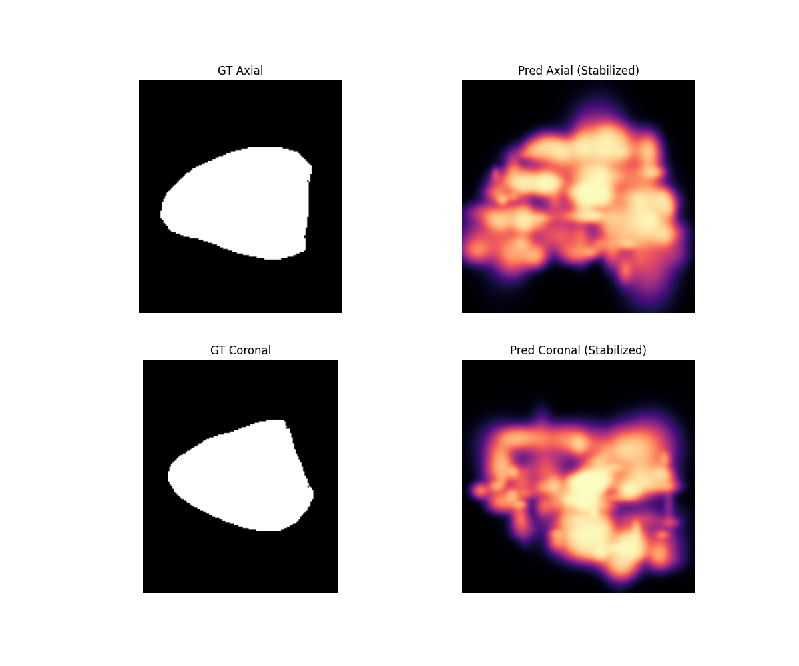
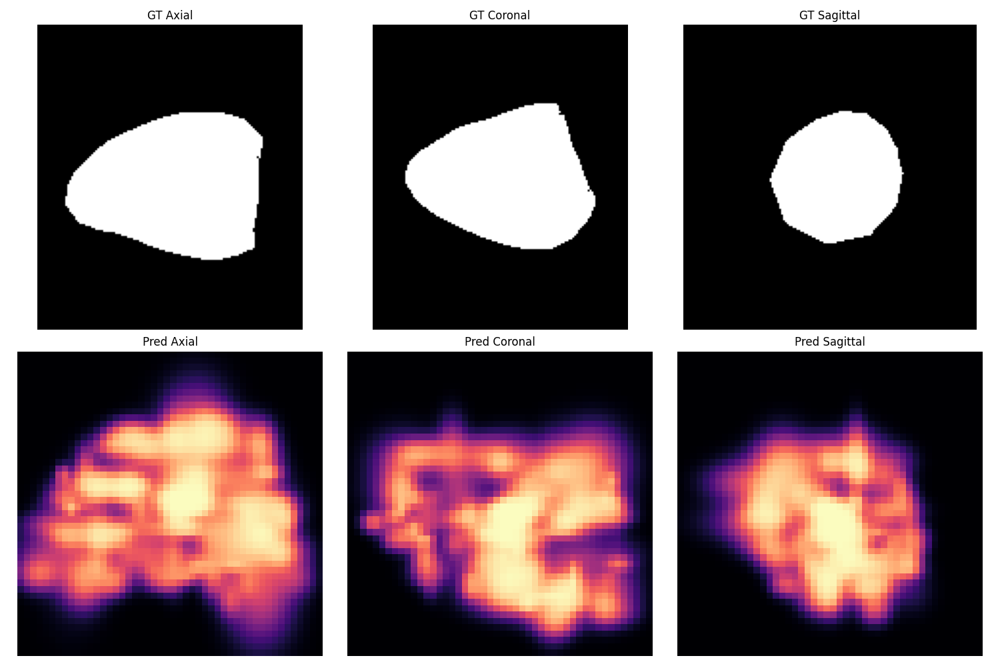

Sparse cardiac imaging to 3D occupancy
Cardiac Reconstruction Evolved
Stabilized Gaussian occupancy fields reconstruct a 3D cardiac label volume, with a fitted mesh surface and direct visual diagnostics.
Interactive Reconstruction
Predicted and ground-truth marching-cubes surfaces from the same validation sample.
Prediction
Ground Truth
Results
Ground truth and predicted orthogonal slices from the current working reconstruction run.


Method
The reconstruction represents cardiac anatomy as a set of 3D Gaussian occupancy kernels rather than a dense voxel grid. Gaussian centers are initialized from labeled occupied voxels, then their positions, scales, and opacities are optimized against sampled volumetric occupancy targets from the selected validation subject.
The occupancy value at any query point is computed with a non-saturating density rule, which accumulates nearby Gaussian contributions as a soft volumetric field. After fitting, the field is sampled on a regular grid and converted into a triangular surface using marching cubes at the 0.5 isosurface. The interactive viewer compares that predicted mesh against a marching-cubes mesh extracted from the ground-truth label volume for the same sample.
This page shows the subject-specific fitted result used for visual inspection. It is not claiming population-level generalization; the purpose is to make the Gaussian reconstruction path inspectable and to compare its recovered surface against the available label geometry.